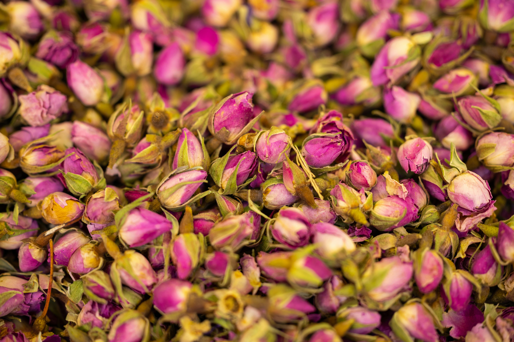
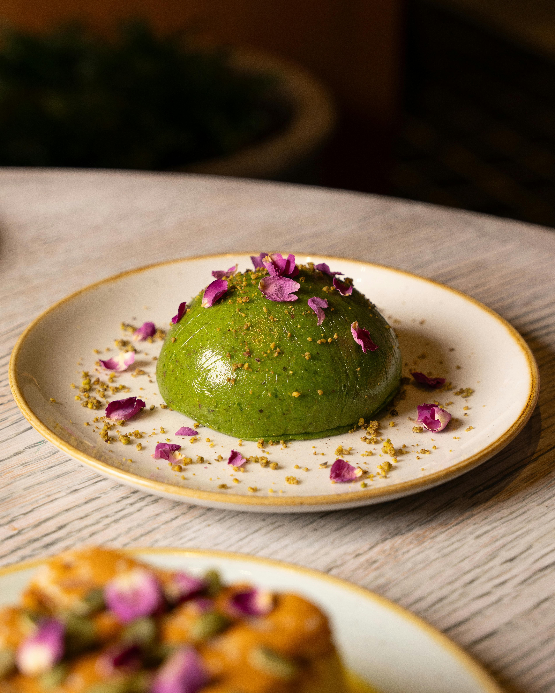
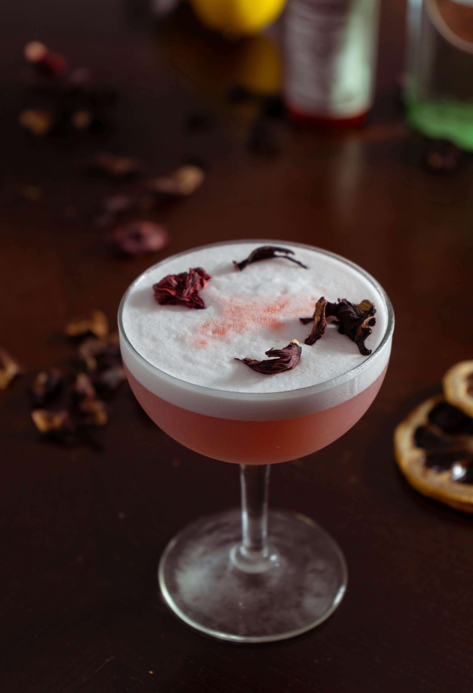

ROSA
Rosa, comonly known as "Rose" originated in hte contents of Asia, notably China and Persia. Roses have been cultivated for over 5000 years and in modern times have been deeply associated with love and luxury. In culinary history Rose petals have been used in both food and medicine. La Jardin has partnered with local foragers to source our roses to ensure sustainable and pesticide free sourcing.
Flavor Profile